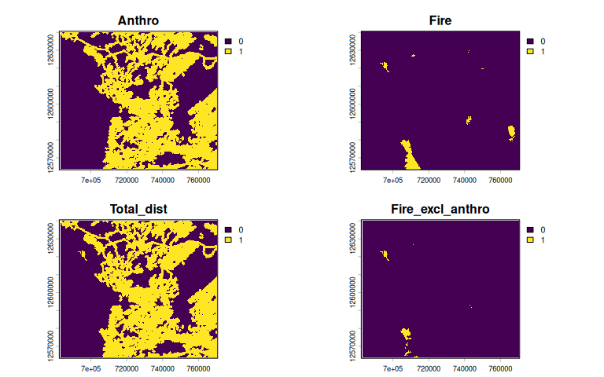
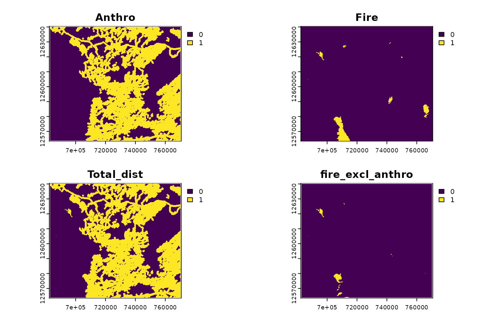

library(caribouMetrics)
library(dplyr)
#>
#> Attaching package: 'dplyr'
#> The following objects are masked from 'package:stats':
#>
#> filter, lag
#> The following objects are masked from 'package:base':
#>
#> intersect, setdiff, setequal, union
library(ggplot2)
library(tidyr)
#>
#> Attaching package: 'tidyr'
#> The following object is masked from 'package:terra':
#>
#> extract
theme_set(theme_bw())
pthBase <- system.file("extdata", package = "caribouMetrics")disturbanceMetrics()
The disturbanceMetrics() function is used to calculate
the metrics described in Table 52 of Environment Canada Scientific
Assessment to Inform the Identification of Critical Habitat for Woodland
Caribou (Rangifer tarandus caribou), Boreal Population, in
Canada 2011 Update. The metrics included are: * Fire: % non-overlapping
fire * Anthro: % non-overlapping anthropogenic disturbance * Total_dist:
% total non-overlapping fire and anthropogenic disturbance *
fire_excl_anthro: % fire not overlapping with anthropogenic
disturbance
disturbanceMetrics() uses several spatial data layers to
calculate the percentage disturbance in an area:
| Name (Argument) | Description |
|---|---|
| Land cover (landCover) | A raster where 0 and NA values are assumed to be water and are omitted from the total area, defines the raster grid |
| Linear features (linFeat) | a raster, sf object, or list of these identifying the location of linear features (e.g. roads, rail) |
| Natural disturbance (natDist) | Cumulative natural disturbance (mostly fire) over the past 40 years |
| Anthropogenic disturbance (anthroDist) | Cumulative anthropogenic disturbance over the past 40 years |
| Project polygon (projPoly) | An sf object containing polygon(s) of the study area(s) |
The example data set loaded below includes a small area in the
Nipigon caribou range that we will use as an example. Disturbance data
sets can be converted from polygons of year of disturbance or time since
disturbance using (reclassDist). In the example below fire
data with polygons containing year of disturbance are converted to a
presence absence raster of cumulative disturbance over the past 40
years.
# load example data and classify cumulative natural disturbance
landCoverD = rast(file.path(pthBase, "landCover.tif"))
natDistD <- sf::st_read(file.path(pthBase, "fireAFFES2020.shp")) %>%
reclassDist(endYr = 2020, numCumYrs = 40, template = landCoverD,
dateField = "FIRE_YEAR")
anthroDistD = rast(file.path(pthBase, "anthroDist.tif"))
linFeatDras = rast(file.path(pthBase, "linFeatTif.tif"))
projectPolyD = st_read(file.path(pthBase, "projectPoly.shp"), quiet = TRUE)
linFeatDshp = st_read(file.path(pthBase, "roads.shp"), quiet = TRUE)
roadsD = st_read(file.path(pthBase, "roads.shp"), quiet = TRUE)
railD = st_read(file.path(pthBase, "rail.shp"), quiet = TRUE)
utilitiesD = st_read(file.path(pthBase, "utilities.shp"), quiet = TRUE)disturbanceMetrics will prepare the data and then
calculate disturbance metrics used as predictor variables by Johnson et
al. (2020). The function can be run in several different ways, and the
simplest is to provide spatial objects for each input.
disturbance <- disturbanceMetrics(
landCover=!is.na(landCoverD),
natDist = natDistD,
anthroDist = anthroDistD,
linFeat = linFeatDras,
projectPoly = projectPolyD
)The disturbanceMetrics function returns an S4 object
with the class DisturbanceMetrics. To access a data.frame
with one column per metric use the results function.
str(disturbance, max.level = 2, give.attr = FALSE)
#> Formal class 'DisturbanceMetrics' [package "caribouMetrics"] with 8 slots
#> ..@ landCover :S4 class 'SpatRaster' [package "terra"]
#> ..@ natDist :S4 class 'SpatRaster' [package "terra"]
#> ..@ anthroDist :S4 class 'SpatRaster' [package "terra"]
#> ..@ linFeat :List of 1
#> ..@ projectPoly :Classes 'sf' and 'data.frame': 1 obs. of 2 variables:
#> ..@ processedData :S4 class 'SpatRaster' [package "terra"]
#> ..@ disturbanceMetrics:'data.frame': 1 obs. of 6 variables:
#> ..@ attributes :List of 3
results(disturbance)
#> zone Anthro Fire Total_dist fire_excl_anthro FID
#> 1 1 46.74151 1.726477 47.29954 0.5580347 0
plot(disturbance@processedData)
Multiple linear feature inputs can also be provided in vector form.
See vignette("caribouHabitat", package = "caribouMetrics")
for other data processing and input options.
disturbanceV <- disturbanceMetrics(
landCover=!is.na(landCoverD),
natDist = natDistD,
anthroDist = anthroDistD,
linFeat = list(roads = roadsD, rail = railD, utilities = utilitiesD),
projectPoly = projectPolyD
)
plot(disturbanceV@processedData)